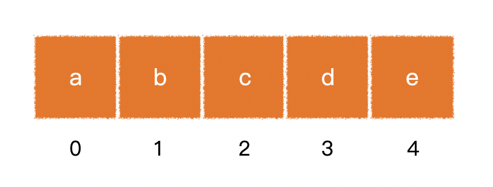
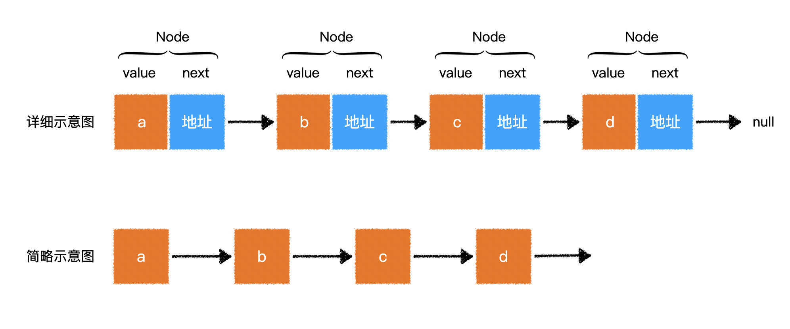
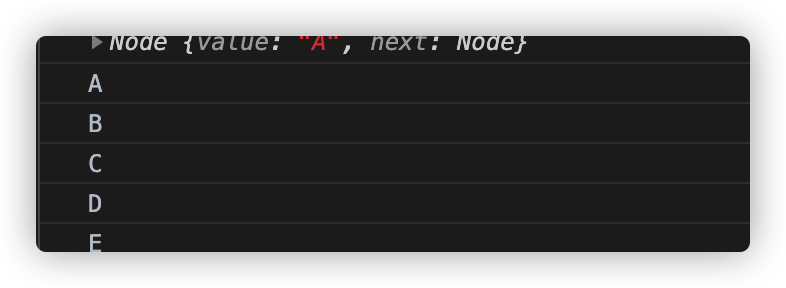

数据结构与算法之线性结构
常见问题
什么是数据结构？
用于表示数据关系的结构
常见的数据结构有：数组、链表、树、图等
什么是算法？
根据已知数据得到结果数据的计算方法
常见的算法有：穷举法、分治法、贪心算法、动态规划
数据结构和算法有什么关系？
数据结构关心的是如何使用合适的结构存储数据
算法关心的是计算过程
有了相应的数据结构，免不了对这种数据结构的各种变化进行运算，所以，很多时候，某种数据结构都会自然而然的搭配不少算法。
数据结构和算法课程使用什么计算机语言？
数据结构和算法属于计算机基础课程，它们和具体的语言无关，用任何语言都可以实现。
本课程采用JavaScript语言。
递归知识回顾
递归（recursion）是函数式编程思想的产物，它使用数学函数的思想进行运算，只要在数学逻辑上是合理的，即代码中的函数一定合理
使用递归时，无须深究其运行过程！
斐波拉契数列的特点是：第1位和第2位固定为1，后面的位，其数字等于前两位之和，比如：
[1, 1, 2, 3, 5, 8, 13, 21, ……]
求斐波拉契数列第n位的值，n>0
如果使用函数
f(n)来表示斐波拉契数列第n位的值，通过数学分析，可以轻松得到：
1f(1) = 12f(2) = 13f(n) = f(n-1) + f(n-2)以上等式考虑到了所有情况，并且在数学逻辑上是合理的，因此，可以轻松书写到代码中：
1// 求斐波拉契数列第n位的值2function f(n){3if(n === 1 || n === 2){4return 1;5}6return f(n-1) + f(n-2);7}
线性结构
线性结构是数据结构中的一种分类，用于表示一系列的元素形成的有序集合。
常见的线性结构包括：数组、链表、栈、队列
数组
特别注意：这里所说的数组是数据结构中的数组，和JS中的数组不一样
数组是一整块连续的内存空间，它由固定数量的元素组成，数组具有以下基本特征：
整个数组占用的内存空间是连续的
数组中元素的数量是固定的（不可增加也不可减少），创建数组时就必须指定其长度
每个元素占用的内存大小是完全一样的

根据数组的基本特征，我们可以推导出数组具有以下特点：
- 通过下标寻找对应的元素效率极高，因此遍历速度快
- 无法添加和删除数据，虽然可以通过某种算法完成类似操作，但会增加额外的内存开销或时间开销
- 如果数组需要的空间很大，可能一时无法找到足够大的连续内存
JS中的数组
在ES6之前，JS没有真正意义的数组，所谓的Array，实际上是一个对象。
ES6之后，出现真正的数组（类型化数组），但是由于只能存储数字，因此功能有限
目前来讲，JS语言只具备不完善的数组（类型化数组）
链表
为弥补数组的缺陷而出现的一种数据结构，它具有以下基本特征：
每个元素除了存储数据，需要有额外的内存存储一个引用（地址），来指向下一个元素
每个元素占用的内存空间并不要求是连续的
往往使用链表的第一个节点（根节点）来代表整个链表

根据链表的基本特征，我们可以推导出它具有以下特点：
- 长度是可变的，随时可以增加和删除元素
- 插入和删除元素的效率极高
- 由于要存储下一个元素的地址，会增加额外的内存开销
- 通过下标查询链表中的某个节点，效率很低，因此链表的下标遍历效率低
手动用代码实现链表
实际上，很多语言本身已经实现了链表，但链表作为一种基础的数据结构，通过手写代码实现链表，不仅可以锻炼程序思维和代码转换能力，对于后序的复杂数据结构的学习也是非常有帮助的。
因此，手写链表是学习数据结构和算法的一门基本功
手写一个链表结构，并完成一些链表的相关函数，要实现以下功能：
创建一个构造函数，用来创建Node节点
1 | /** |
2 | * 创建node节点 |
3 | * @param {*} value 要创建node节点的值 |
4 | */ |
5 | function Node(value) { |
6 | this.value = value; |
7 | this.next = null; |
8 | } |
9 | var a = new Node("A"); |
10 | var b = new Node("B"); |
11 | var c = new Node("C"); |
12 | var d = new Node("D"); |
13 | var e = new Node("E"); |
14 | a.next = b; |
15 | b.next = c; |
16 | c.next = d; |
17 | d.next = e; |
注意： 一下所有的例子创建node节点都是以此构造函数生成，并创建一个链表。
遍历打印
1/**2* 遍历打印整个链表的数据3* @param {*} node4*/5function print(node) {6if (!node) return;7console.log(node.value);8if (node.next) print(node.next);9}10print(a);打印出的值为ABCDE

获取链表的长度
1/**2* 获取链表的长度3* @param {} node4*/5function getLength(node) {6if (!node) return 0;7return 1 + getLength(node.next);8}910console.log(getLength(a));打印结果是5
通过下标获取链表中的某个数据
1/**2* 通过下标 获取链表中的某个数据3* @param {*} node 链表4* @param {*} index 下标5*/6function selectValue(node, index) {7/**8* 辅助函数 通过判断当前下标和要查找的下标是否相等来查找值9* @param {*} node 链表10* @param {*} index 要查找的值的索引11* @param {*} curIndex 当前的索引值12*/13function _selectValue(node, index, curIndex) {14if (!node) throw Error("超出界限");15if (index === curIndex) return node.value;16curIndex++;17return _selectValue(node.next, index, curIndex);18}19return _selectValue(node, index, 0);20}2122console.log(selectValue(a, 2));输出结果是C
通过下标设置链表中的某个数据
1/**2* 通过下标设置（修改）链表中的某个数据3* @param {*} node 链表4* @param {*} index 要修改的索引5* @param {*} value 要修改为的值6*/7function setNode(node, index, value) {8var nodes = node;9/**10* 辅助函数 通过判断当前下标和要查找的下标是否相等来修改值11* @param {*} node 当前的链表12* @param {*} index 要修改的索引13* @param {*} curIndex 当前的索引值14*/15function _setNode(node, index, curIndex) {16if (!node) throw Error("数据错误");17if (index === curIndex) {18node.value = value;19return nodes;20}21curIndex++;22return _setNode(node.next, index, curIndex);23}24return _setNode(node, index, 0);25}2627console.log(setNode(a, 3, "k"));Node {value: "A", next: Node}2829// 打印的数据30next: Node31next: Node32next: Node33next: Node34next: null35value: "E"36__proto__: Object37value: "k"38__proto__: Object39value: "C"40__proto__: Object41value: "B"42__proto__: Object43value: "A"在链表末尾加入一个新节点
1/**2* 在链表末尾加入一个新节点3* @param {*} node 链表4* @param {*} pushValue 要加入的新值5*/6function pushNode(node, pushValue) {7if (node.next) {8return pushNode(node.next, pushValue);9} else {10var w = new Node(pushValue);11return (node.next = w);12}13}14console.log(pushNode(a, "w"));在链表某一个节点之后加入一个新节点
12/**3* 在链表的某一个节点以后加入一个新的节点4* @param {*} node5* @param {*} beforeNode6* @param {*} value7*/8function insertNode(node, beforeNode, value) {9if (node === beforeNode) {10var newNode = new Node(value);11newNode.next = node.next;12node.next = newNode;13} else {14return insertNode(node.next, beforeNode, value);15}16}1718insertNode(a, b, "l")19console.log(a);删除一个链表节点
1 | /** |
2 | * 删除一个链表的某一个节点 |
3 | * @param {*} node |
4 | * @param {*} deleteValue |
5 | */ |
6 | function deleteNode(node, deleteValue) { |
7 | if (!node) throw Error("数据错误"); |
8 | if (node.next === deleteValue) { |
9 | node.next = deleteValue.next; |
10 | } else { |
11 | deleteNode(node.next, deleteValue); |
12 | } |
13 | } |
14 | |
15 | deleteNode(a, c); |
16 | print(a)//A B l k E w |
完整代码
1 | /** |
2 | * 创建node节点 |
3 | * @param {*} value 要创建node节点的值 |
4 | */ |
5 | function Node(value) { |
6 | this.value = value; |
7 | this.next = null; |
8 | } |
9 | |
10 | var a = new Node("A"); |
11 | var b = new Node("B"); |
12 | var c = new Node("C"); |
13 | var d = new Node("D"); |
14 | var e = new Node("E"); |
15 | |
16 | a.next = b; |
17 | b.next = c; |
18 | c.next = d; |
19 | d.next = e; |
20 | console.log(a); |
21 | |
22 | /** |
23 | * 遍历打印整个链表的数据 |
24 | * @param {*} node |
25 | */ |
26 | function print(node) { |
27 | if (!node) return; |
28 | console.log(node.value); |
29 | if (node.next) print(node.next); |
30 | } |
31 | print(a); |
32 | |
33 | /** |
34 | * 获取链表的长度 |
35 | * @param {} node |
36 | */ |
37 | function getLength(node) { |
38 | if (!node) return 0; |
39 | return 1 + getLength(node.next); |
40 | } |
41 | |
42 | console.log(getLength(a)); |
43 | |
44 | /** |
45 | * 通过下标 获取链表中的某个数据 |
46 | * @param {*} node 链表 |
47 | * @param {*} index 下标 |
48 | */ |
49 | function selectValue(node, index) { |
50 | /** |
51 | * 辅助函数 通过判断当前下标和要查找的下标是否相等来查找值 |
52 | * @param {*} node 链表 |
53 | * @param {*} index 要查找的值的索引 |
54 | * @param {*} curIndex 当前的索引值 |
55 | */ |
56 | function _selectValue(node, index, curIndex) { |
57 | if (!node) { |
58 | throw Error("超出界限"); |
59 | } |
60 | if (index === curIndex) { |
61 | return node.value; |
62 | } |
63 | curIndex++; |
64 | return _selectValue(node.next, index, curIndex); |
65 | } |
66 | return _selectValue(node, index, 0); |
67 | } |
68 | |
69 | console.log(selectValue(a, 2)); |
70 | |
71 | /** |
72 | * 通过下标设置（修改）链表中的某个数据 |
73 | * @param {*} node 链表 |
74 | * @param {*} index 要修改的索引 |
75 | * @param {*} value 要修改为的值 |
76 | */ |
77 | function setNode(node, index, value) { |
78 | var nodes = node; |
79 | /** |
80 | * 辅助函数 通过判断当前下标和要查找的下标是否相等来修改值 |
81 | * @param {*} node 当前的链表 |
82 | * @param {*} index 要修改的索引 |
83 | * @param {*} curIndex 当前的索引值 |
84 | */ |
85 | function _setNode(node, index, curIndex) { |
86 | if (!node) throw Error("数据错误"); |
87 | if (index === curIndex) { |
88 | node.value = value; |
89 | return nodes; |
90 | } |
91 | curIndex++; |
92 | return _setNode(node.next, index, curIndex); |
93 | } |
94 | return _setNode(node, index, 0); |
95 | } |
96 | |
97 | console.log(setNode(a, 3, "k")); |
98 | |
99 | /** |
100 | * 在链表末尾加入一个新节点 |
101 | * @param {*} node 链表 |
102 | * @param {*} pushValue 要加入的新值 |
103 | */ |
104 | function pushNode(node, pushValue) { |
105 | if (node.next) { |
106 | return pushNode(node.next, pushValue); |
107 | } else { |
108 | var w = new Node(pushValue); |
109 | return (node.next = w); |
110 | } |
111 | } |
112 | console.log(pushNode(a, "w")); |
113 | |
114 | /** |
115 | * 在链表的某一个节点以后加入一个新的节点 |
116 | * @param {*} node |
117 | * @param {*} beforeNode |
118 | * @param {*} value |
119 | */ |
120 | function insertNode(node, beforeNode, value) { |
121 | if (node === beforeNode) { |
122 | var newNode = new Node(value); |
123 | newNode.next = node.next; |
124 | node.next = newNode; |
125 | } else { |
126 | return insertNode(node.next, beforeNode, value); |
127 | } |
128 | } |
129 | |
130 | insertNode(a, b, "l"); |
131 | console.log(a); |
132 | |
133 | /** |
134 | * 删除一个链表的某一个节点 |
135 | * @param {*} node |
136 | * @param {*} deleteValue |
137 | */ |
138 | function deleteNode(node, deleteValue) { |
139 | if (!node) throw Error("数据错误"); |
140 | if (node.next === deleteValue) { |
141 | node.next = deleteValue.next; |
142 | } else { |
143 | deleteNode(node.next, deleteValue); |
144 | } |
145 | } |
146 | |
147 | deleteNode(a, c); |
148 | print(a) |
注意：部分文章可能会在不就的将来更新
如果能够帮助到你，是小编最大的荣幸
当然 有 不好的地方 请大家帮忙指出 学习永无止境
小编一直认为 人外有人 天外有天 一起学习 共同进步
让我们共同加油吧！！！
原文作者: Yunjie Ge
原文链接: http://www.blog.geyunjie.com/2020/07/24/sjjgysf-line/
版权声明: 转载请注明出处(必须保留作者署名及链接)